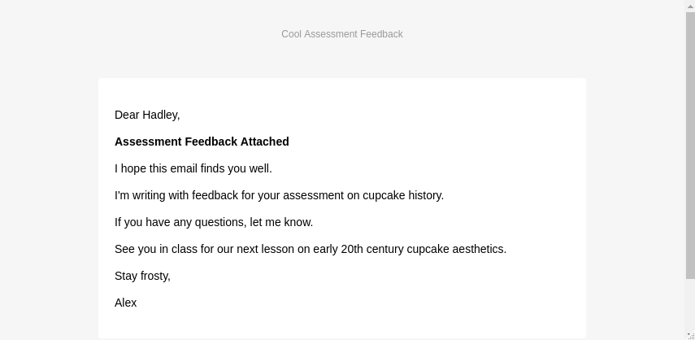

An important part of working with students on their assessment tasks is feedback. Students need detailed, specific comment on their work for the purposes of learning and self-improvement. While learning management systems serve this function, they tend to be clunky, anonymous, and unfriendly. Frequently, I need to send a document with written feedback and an annotated copy of the submission, and email is a good, simple tool for that.
Unfortunately, email clients like Outlook and even mutt don’t make this easy at scale. Unless you want to do it manually, sending a different attachment to each of 80 students is hard and time-consuming.
Thankfully, the blastula package for R provides a handy and easy-to-use tool with which to send feedback documents to students (and anyone else, for that matter).
I have two main use cases:
What follows is a basic example of the first use case. The second should be straightforward enough after reading through this post.
What we are doing is taking a folder with a feedback document for each student and using R to loop through a list of enrolments to send each student their own feedback file. For the purposes of the example I’ve assumed every student has a file to be sent - in my real-world script I filter the enrolment data so I only email those students with a feedback document in the folder.
First we want to get our packages ready and set all our variables:
library(blastula)
library(dplyr)
library(readr)
# Read the class enrolment data
class_names <- readr::read_csv("class-data.csv")
# Prepare variables for email content
subject <- "Course Assessment Feedback"
from <- "your_email@heapsgoodeducation.edu"
# Get the appropriate filenames
feedback_files <- list.files("/path/to/feedback_files/", full.names = TRUE)
# Get a nicely formatted date/time string: e.g. 'Mon, 27 Apr at 20:10'
current_date_time <- format(Sys.time(), "%a, %d %b at %H:%M")Next we want to get our email text, with a placeholder for the recipient’s name. To do this we can either create a markdown document and read it in, or simply create a character object in R with markdown formatting. Here I’ve done the latter (remember in markdown two new lines is a paragraph break).
# Generate the body text for the email message
email_text <- "Dear StudentName,
**Assessment Feedback Attached**
I hope this email finds you well.
I'm writing with feedback for your assessment on cupcake history.
If you have any questions, let me know.
See you in class for our next lesson on early 20th century cupcake aesthetics.
Stay frosty,
Alex
"With all of that setup, we can now bring blastula in to send each student in our class their assessment feedback document in a few seconds.
First we get our email login credentials sorted. For this we use one the functions that ships with blastula. In this example I’m using Office365 (because that’s what I use at work) but there are options for Gmail and Outlook, too (note: this will ask you for your password and will store it in your working directory in a plain-text file; best to delete it when you’re done). You might need to play around for a bit to find the correct settings for your email.
# Create a credentials file
create_smtp_creds_file(
user = "your_email@heapsgoodeducation.edu",
host = "smtp.office365.com",
port = 587,
use_ssl = TRUE,
file = ".email_creds"
)And finally we simply loop through our class list, sending each student an email with their individual feedback files attached:
# Loop through eligible recipients and send an email using blastula package
for(i in 1:length(class_names$Surname)){
name <- class_names$First_Name[i]
recipient <- paste(class_names$studentID[i], "@student.heapsgoodeducation.edu", sep = "")
# Find the files that match the Surname
# (having a filenaming protocol for feedback files is vital!
# Something like Surname_studentID_Assessment.pdf is
# both human and machine readable.
files <- feedback_files[grepl(
class_names$studentID[i],
feedback_files)]
# Replace the placeholder in the email message text
msg <- gsub("StudentName", name, email_text)
# Make the email object
email_object <-
compose_email(
body = md(msg),
header = "Cool Assessment Feedback",
footer =
md(c(
"Email made in and sent from `R`, using the awesome `blastula` package, on ",
current_date_time))
)
# Attach feedback files to the email object
for (f in files) {
email_object <- add_attachment(email_object, f)
}
# Send the email
smtp_send(
email = email_object,
from = from,
to = recipient,
subject = subject,
credentials = ".email_creds"
)
# Tell yourself that you've sent each email.
print(c(name, files))
}And that’s it! There’s probably a much better way to do it but this gets the job done.
This is what your students will receive:

A simple solution to a time consuming problem.
Thanks to Richard Iannone and the contributors to blastula for a great package.
Made in Vim/Neovim and the Shell with Markdown and Pandoc.
© 2016-2020 Alex Norman
Latest update on 8, May 2020